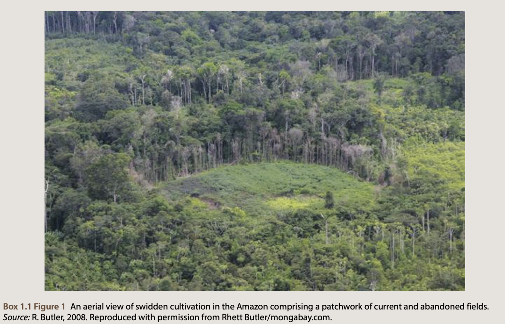
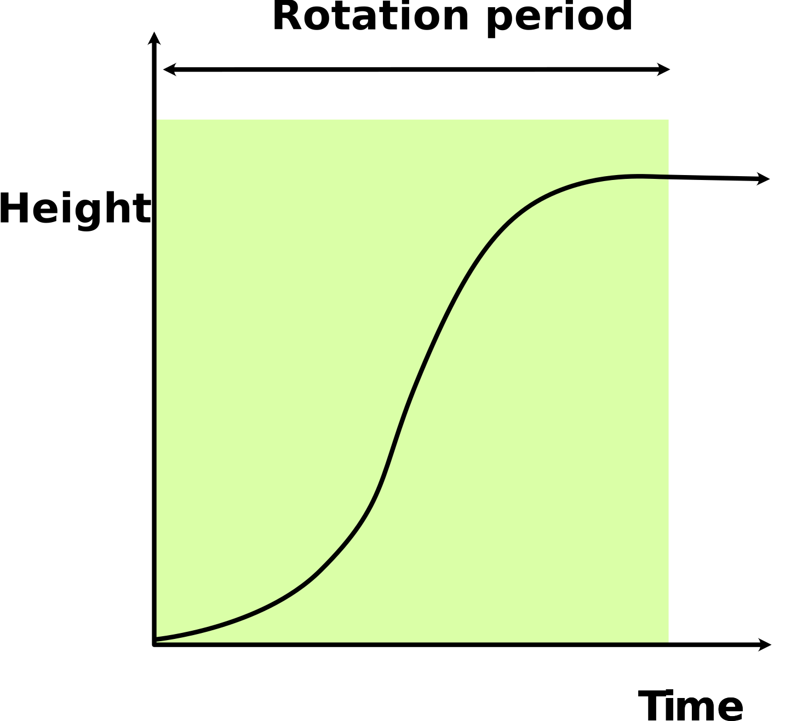
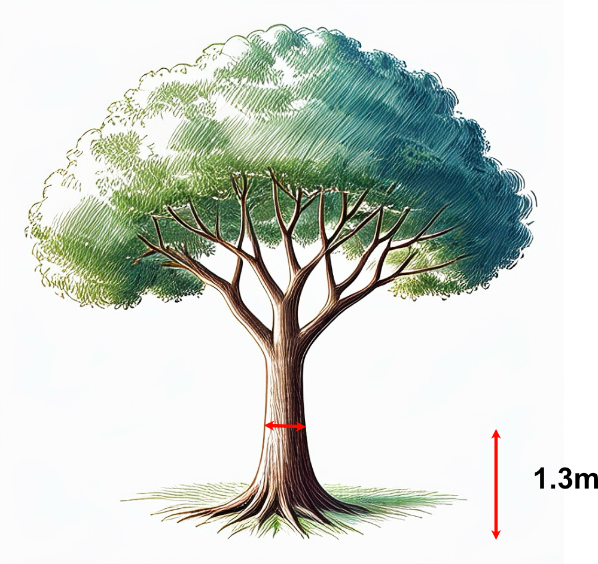
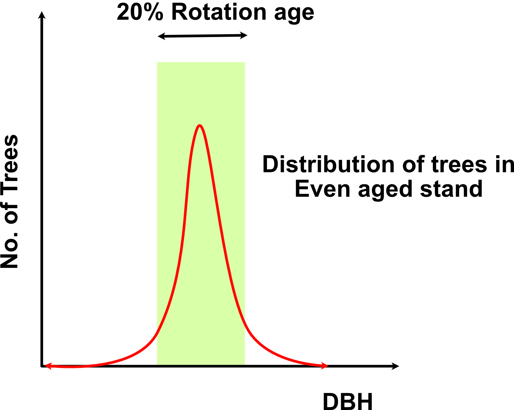
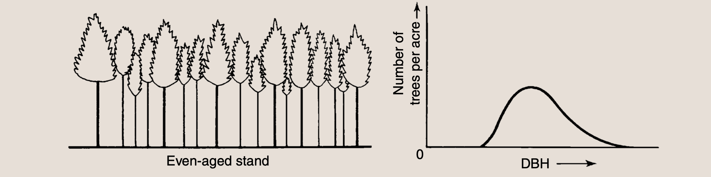
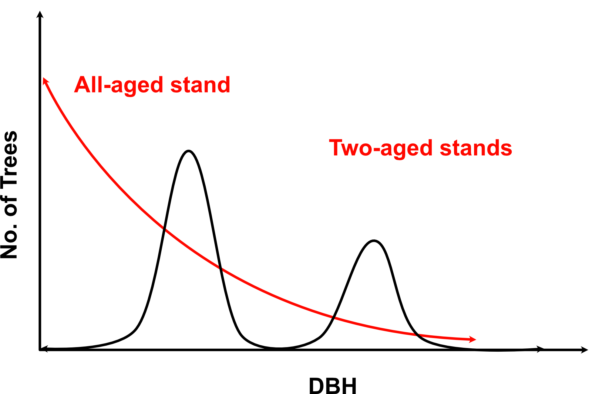
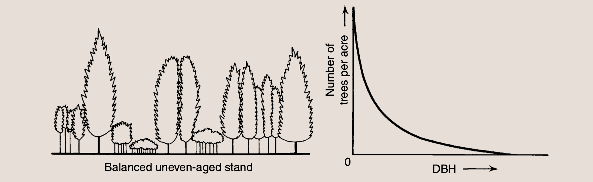
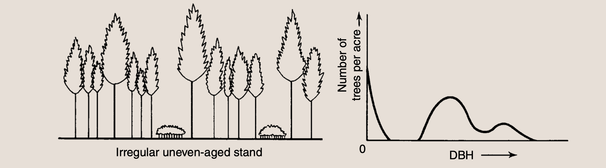
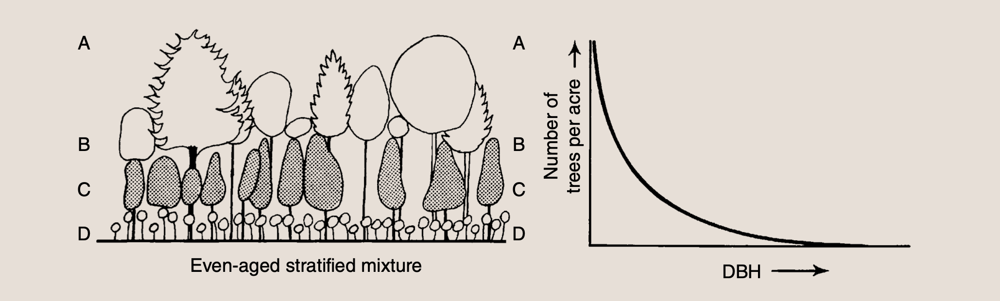

Sustainable Forest Environment (SFE)
Lecture 10: Silviculture Practices(Last update: 12 June 2025)
Learning Objectives
- Siviculture basics
What is silviculture?
Word root
The word “silviculture” comes from the Latin words “silva” (forest) and “cultura” (cultivation).
Definition
Silviculture is the practice of controlling the growth, composition/structure, and quality of forests to meet specific stand structural objectives.
Definition
Silviculture is the art and science of cultivating forest crops.
Silviculture is the oldest application of the science of ecology and is a field that was recognized before the term ecology was coined
Silviculture as a preindustrial practice
- Silviculture, which involves growing and managing trees in forests, has been practiced for thousands of years before it became a formal science.
- Swidden agriculture, is the most ancient form of silviculture.
Swidden agriculture
- It is a short-term farming method where people clear a small area of forest, grow food crops intensively, and then abandon the land, allowing the forest to gradually grow back.
- It is widely practiced in the more remote forest regions of the world and can be a very sustainable form of agri‐silviculture.
- Such systems have different lengths of successional development before returning back for cultivation.
- They are largely dependent on the fertility of the soil and the time it takes for soil fertility to recover
- Many swidden system practices planting trees after cultivation to restore the forest.
- In the more remote forests of tropical Africa and the Amazon, people still practice the silviculture associated with swidden systems.
Examples of preindustrial silviculture
- Swidden Cultivation System of the Yanomami in Brazil


Examples of preindustrial silviculture
- Cultivation Systems of Native Americans in Eastern North American Oak Forests
Early agricultural civilizations of the world and their main crops.
Indigenous silvicultural systems of ancient civilizations
- Maya of Yucatan Mexico
- Sinhala of Northeastern Sri Lanka
A diagram depicting Maya swidden succession
Silviculture as a Western Construct
- Emerged during the industrial revolution in central Europe when forests were heavily exploited for mining, charcoal production, and urban development
- In Germany, in 1787, George Ludwig Hartig envisioned the concept of forestry school
- Heinrich Cotta (“pioneer of forestry”) founded a forestry school in 1811 near Dresden, becoming the foundation for modern forestry worldwide
- Spread to Russia, Austria, Sweden, and France in the late 18th century
- Spain established its first Forest Engineering School in 1844
- British government commissioned Sir Dietch Brandis (Cotta’s student) to start the Indian Forest Service and School of Forestry at Dehra Dun
Silviculture as a Western Construct
- North American forestry developed in the late 19th century through European-trained foresters
- Gifford Pinchot received forestry training in Germany and France before bringing practices to America
- German foresters Carl Schenck and Bernard Fernow established early American forestry schools in 1898
- Represents a shift from traditional/indigenous forest management to a systematized, scientific approach focused on timber production
- Prioritized economic yield and efficiency over traditional ecological knowledge
- Created a conceptual framework that emphasized forests primarily as economic resources
Silviculture as a current practice
- Current silviculture is a much more complex and varied practice. Complex regeneration methods are used.
- Today, silviculture can be practiced where economies have developed to create strong values for both services and products from the forest
- Much of the developed world now has intensive plantation systems for wood production, and considerable second‐growth forest on more marginal sites that have returned after agricultural abandonment
Purpose of silviculture today
- Silviculture is designed to create and maintain the kind of forest that will best fulfill the objectives of the owner and the governing society.
- The production of timber, though a common objective, is neither the only nor necessarily the dominant aim in silviculture.
- Benefits such as recreation or aesthetics may be more important, and water and wildlife always have to be taken into account.
- It is through the manipulation of growing space by removing trees that much of the other values such as improving wildlife habitat, creating vistas, or encouraging a vigorous groundstory for surface watershed protection can be achieved.
Resource Issues Applicable to the Use of Silviculture
- Products:
- Biomass, wood for fuel
- Fiber (paper, ropes, etc.)
- Composit materials (plywood, particle board, more recently wood-plastic composits etc.)
- Timber for construction, furniture, and other uses
- Fruits and nut
- Medicinal plants
Resource Issues Applicable to the Use of Silviculture
- Services:
- Clean water supply
- Stormwater management
- Carbon sequestration
- Open-space recreation
Guiding principles of silviculture
- Imitating nature through silviculture
- Conservation of site productivity
- Control of stand structure and process
- Control of composition
- Control of stand density
- Control of rotational period
Silviculture systems
Silviculture system
Silviculture system is a planned program of treatments during the whole life of a forest designed to achieve specific stand structural objectives.
- The planned program of treatments includes following to achieve a predictable yield of benefits from the stand over time:
- Establishment of the stand
- Tending of the stand
- Harvesting of the stand
Stand
A stand is defined as the smallest unit of forest mapping that can be defined as a spatial area where a group of trees is more or less homogeneous in regard to
- species composition
- density
- age-class distribution.
The internal structure of stands contains trees of different species and age
From the view point of forest management the term “forest” denotes a collection of stands that are managed together.
We seek sustained yield of products from the forest, not the stand.
Species composition in Stand
- Species composition is another attribute defining stands.
- Identifying stand boundaries by species composition can be done by characterizing species change in stem density and basal area.
- In simpler terms, we can tell where one forest stand ends and another begins by counting how many trees of each species are present (stem density) and measuring their trunk sizes (basal area).
{kind=link}
Stand density
Stand development process
The stand develpment process:
- Starts with the birth of the stand
- Continue with comptetition among trees
- Ends with the death of old trees and their replacement.
Rotation period
The rotation period is the time between the establishment of a stand and its final harvest.
- Teak grown for harvesting: from the sowing stage to the point where the rate of growth of the teak trees has slowed down or stopped such that it is considered economically a better option to fell the trees.
- Rotation period is the Average age at which a tree is considered mature for felling

Diameter at Breast Height (DBH)
Diameter at Breast Height (DBH) is a standard method of measuring the diameter of a tree trunk at 1.3 meters (4.5 feet) above ground level. It is commonly used in forestry to assess tree size and volume.
DBH measurement
Age-class distribution of stands (Even-age stands)
Even-age stands
- These are the simplest kind of stand development
- Trees growing within the stand have only small differences in their ages: It means that all trees almost starts together afer the previous stand is removed.
- These stands generally contains trees of single species.
- The difference in age is usually less than 20% of the rotation age.

Even-aged stands
Even-aged stand, Source: The practice of silviculture by Ashton and Kelty
- Even-though the age is same, the DBH of the trees can be different (due to site quality and competition)
- Although it might seem that fat trees are always older than thin ones, diameter is not a very good criterion of age and must be used as such with caution.
- The diameter growth of trees is much more variable than that in height
Uneven-aged stands
- All-aged stand: These stands contain trees of different ages, often with a wide range of age classes.
- Multi-aged stand: Two-aged or three-aged stands contain trees with two or three distinct age classes.

- The uneven-aged stands can be balance or unbalanced
- They can be single-species or multi-species stands.
Balanced all-aged stand
Uneven-aged stand, Source: The practice of silviculture by Ashton and Kelty
- Balanced single-species all aged stand
- How does such a stand develop naturally?
Single species, three-aged stands (unbalanced)
Multi-aged stand, Source: The practice of silviculture by Ashton and Kelty
- Uneven‐aged stand, single species, unbalanced: they are revealed as humps on the diameter distribution curve.
- The diameter distribution of each even‐aged component broadens with age and will also be modified if the age class is composed of different species that grow at varying rates
Multi-species, all-aged stands
Multi-aged stand, Source: The practice of silviculture by Ashton and Kelty
- Age differences are easily seen in forests with only one tree species, or in mixed forests where different species grow at almost the same rate. Due to this trees of the same age form a single layer in the forest canopy.
- However, even‐aged mixtures of tree species usually segregate into different canopy strata and exist as stratified mixtures in which species of differing ecological status occupy different strata.
Stand structure quiz


Stand structure quiz/answers
Stand structural objectives
- To maintain or create a forest stand of certain age-class structure
- Even-aged management is particularly suitable when Timber production is a primary objective or when operational efficiency is prioritized over structural diversity.
- Uniform growth rates make planning and operations more predictable
- Standardized silvicultural treatments can be applied across the entire stand
- Concentrated harvesting reduces operational costs
- Higher volume yield per area during harvest
- More consistent wood quality and product dimensions
- Creates optimal growing conditions for desired species with similar growth requirements
Stand structural objectives
Uneven-aged forest
- Useful when we are managing forests for the purpose of wildlife or promoting biodiversity.
- Young saplings provide food for herbivores and old snag trees provide shelter to many birds
- More robust against pests, diseases, and climate fluctuations
- Reduced risk of catastrophic disturbances affecting the entire stand
- Creates a more regular cash flow rather than periodic large payments
- Continuous forest cover reduces soil erosion
- Better maintains water quality and regulates water flow
- Maintains more consistent carbon stocks over time
Stand dynamics
- A forest stand is dynamic and changes over time.
- Stand dynamics is the study of changes in forest stand structure over time.
- How stand behaves after disturbances
- It is important to predict what kind of vegetation will follow regenerative disturbances
- Wha pattern of develpment will occur in the vegetation as the stand grows older.
Silviculture is understanding disturbances in forest
- All silvicultural procedures are, at least to some degree, simulations of natural processes in which stands
- start \(\rightarrow\) develop \(\rightarrow\) replaced (gradually or suddenly).
Plants can only begin growing or speed up their growth when another organism dies, creating space for them to develop.
Mature plants often crowd out smaller ones by growing larger, slowing their growth, or eliminating weaker plants.
Some plants can endure beneath taller neighbors and thus share growing space with them.
Natural disturbances
- Fire: fire that can be said to “kill from the bottom up” because they are more likely to kill small plants than large.
- It is leathal to groundstory plants.
- Wind and insects: windstorms or pests that kill more large trees than small trees,
- and thus “kill from the top down”.
- They have been categorized as “release”.
- Because these disturbances destroy the upper canopy but allow the release of the understory.
Stages of stand development
- First stage: Stand initiation
What informs silviculture?
Silvics
Silvics is the study of the life history, general features of forest crops with respect to environmental factors. It is the basis of silviculture.
Life history
- How did a plant come to grow in an area?
- How long does it take for the plant to get established?
- What is the life expectancy of the plant?
What informs silviculture?
General features
- Light demanders:
- Species that require full sunlight for growth and development.
- Examples: Teak, Pine, Eucalyptus (most conifers and evergreen trees).
- Shade tolerant:
- Species that can grow in low light conditions, often found in the understory of forests.
- Examples: Sugar maple, American beech, Hemlocks, True firs etc.
What informs silviculture?
Climatic factors
- Rate of photosynthesis is optimum around 25 °C.
- The rate of respiration increases with temperature between 0 °C and 40 °C.
- Rainfall:
- Wet climate (>2500 mm annual rainfall): wet evergreen forests
- Intermediate wet climate (900-2500 mm annual rainfall): wet semi-evergreen forests, moist deciduous forests
- Dry climate (<900 mm annual rainfall): dry deciduous forests, desert scrub forests, thorny forests
- Wind cccan bend trees. Not ideal for timber production.
What inform silviculture?
Topographic factors
- Altitude
- Slope: Top soil on hill slopes repeatedly gets washed away by rains. Organic content of these soils is often low.
Edaphic factors (physical and chemical properties of soil)
- pH of soil (Teak grows best in pH of 6.5 to 7.6)
- Depth of water table (optimum is 5 to 10 m beneath surface)

Kyoto University | Sustainable Forest Environment (SFE)